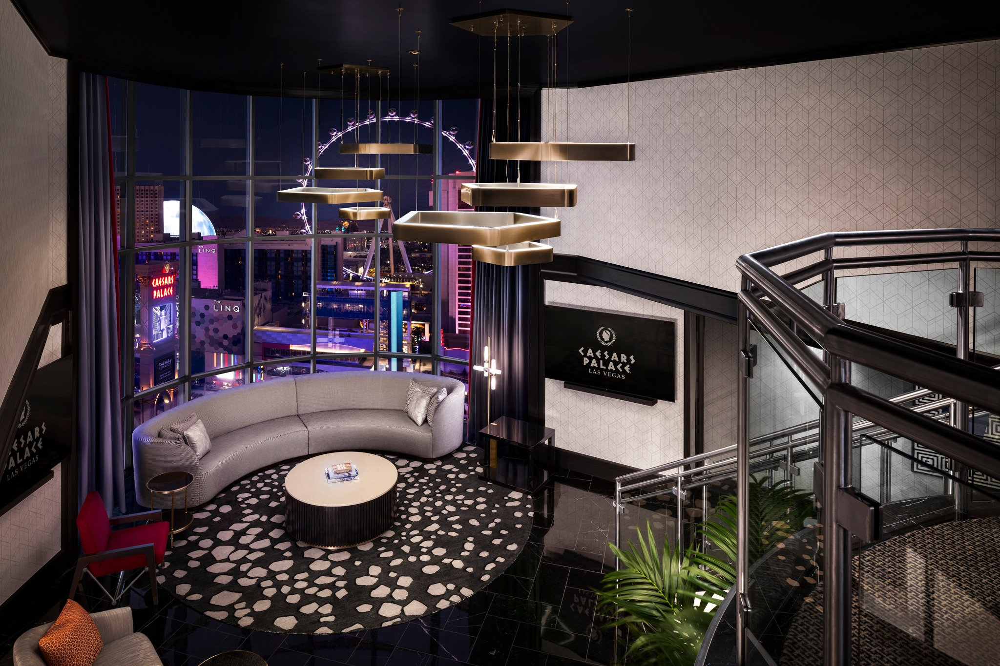
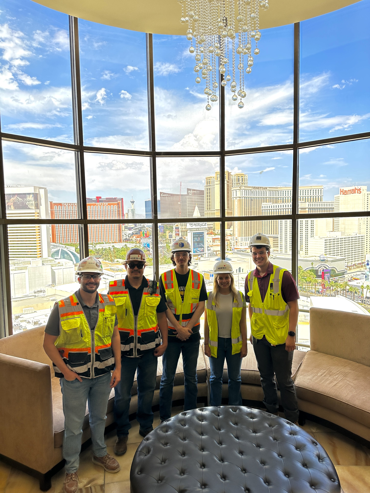

The projects, people, and moments that shaped my professional growth
Let me be honest—when I first started at Shawmut, I had no idea what I was walking into. I knew it was a construction project management internship, but I didn't really understand what that meant on a day-to-day basis until I was actually there. We were working on the Colosseum Tower at Caesars Palace, renovating the general hotel rooms during my first summer and then the high-end luxury suites during my second. The scale alone was intimidating: 20 floors, 440 rooms initially, with construction happening in an active casino where security, access control, and coordination with casino operations were constant concerns [2][3].
This wasn't the kind of internship where you shadow someone and take notes. Within my first week, I was handed real responsibilities that mattered to the project's success. I learned quickly that construction project management isn't about standing back and watching a schedule unfold—it's about constantly translating between drawings, people, materials, site conditions, documentation, and decisions. Every day brought something unexpected, whether it was a subcontractor issue, a discrepancy between old blueprints and reality, or a field problem that needed an immediate solution [2].


My first summer was heavily focused on preconstruction operations before transitioning into active construction. I spent my days working with blueprints, floorplans, and electrical wiring diagrams—labeling them, commenting on them, modifying them as conditions changed. I handled RFIs (Requests for Information), attended meetings and created summaries of design decisions to send to subcontractors, inspected and documented submittals and product samples, and helped maintain both physical and digital project files using Procore [2][3].
What struck me most during this phase was how much construction depends on documentation and communication. You'd think the blueprints would tell you everything you need to know, but the reality is messier. We were working in a decades-old Vegas casino, and the existing conditions often didn't match what the drawings said. There were old pipes where they shouldn't be, electrical rooms in slightly different locations, structural elements that required workarounds. One of my project managers, Ryan Herron, had a saying that stuck with me: "Don't trust, verify, and don't trust the verification." It became my philosophy for the rest of the internship—always double-check, always confirm, always keep your eyes open for discrepancies [3].
Within my first week, the project manager I was working under told me he wanted me to take full control of the badging system for subcontractor personnel. He needed it off his plate entirely. At the time, I was terrified—this was my first internship, and he was trusting me with something that affected hundreds of workers across 14 different subcontractors. But I took it on, and it ended up becoming one of my proudest contributions [2][3].
The challenge was creating a functional access-control and personnel tracking system for an active construction site inside a high-security casino. Every worker needed proper identification, safety training verification, parking access, and the ability to move through casino security checkpoints. I designed physical badges unique to our project with Shawmut branding, unique worker ID numbers, and parking barcodes. I built a live Excel tracker that aggregated personnel data from all 14 subcontractors—names, driver's licenses, employee numbers, company affiliations, and safety training compliance. I coordinated with Caesars Entertainment security to give them updated physical and digital lists they could cross-reference to verify workers on-site [2][3].
The system ended up covering over 300 workers and became integral to how the project functioned. It helped with site security, worker access and egress, parking coordination, subcontractor accountability, and gave the general contractor much better visibility over who was present at any given time. The team used my system for the remainder of the contract. Looking back, I'm proud not just because it worked, but because it taught me that sometimes the best solution is the one that's practical enough for people to actually use [2][3].
Once construction started inside the casino, we hit a major logistical challenge: tracking the progress of hundreds of hotel rooms. Each room had its own status, its own issues, its own sequence of required tasks, and its own readiness for the next subcontractor. There was an online system that was supposed to manage this, but it wasn't working well in the field. Some subcontractors struggled with the technology, the site Wi-Fi was slow or nonexistent due to required electrical disconnects, and some teams outright refused to use it. Information gaps were causing delays because no one could easily tell which rooms were ready for the next trade [2][3].
Initially, the project team sent me floor by floor, room by room, with pen and paper to manually track progress and issues. After doing this for a while, I realized there had to be a better way. So I created my own printed room-progress tracker and placed one in every room. It was simple—just a physical sheet where foremen and workers could check off completed tasks, leave notes, see the room's status at a glance, and understand which trade needed to move in next. It didn't require Wi-Fi, logins, or any technical literacy. It just worked [2][3].
What surprised me was how quickly the subcontractors adopted it. They started using the trackers to coordinate themselves, checking rooms on each floor to see where they were needed. It became a practical tool that matched the reality of the jobsite instead of forcing a theoretical system onto workers who didn't have the infrastructure to support it. By the time I left the first project, active construction had reached 10 floors and 220 rooms, all using the system [2][3].
There was one moment during my first summer that really tested how I handle pressure. A construction worker came up to me and mentioned there was a small leak near an electrical room. When I went to find it, I realized the situation was way more serious than "a small leak"—a copper water pipe had ruptured and was spraying pressurized water across the entire hallway, directly toward the floor's electrical room [2][3].
I didn't really think, I just acted. I grabbed a 55-gallon construction trash can, shoved it under the pipe, and bent the pipe downward to direct the water into the container. Then I immediately radioed the onsite superintendents for help and started searching for the floor's water shutoff. The whole thing probably only lasted a few minutes, but it felt much longer [2][3].
What I learned from that experience wasn't that I'm some kind of emergency response hero—it was that field awareness and quick thinking matter. I understood the risk of water near electrical infrastructure, I knew I needed to contain it immediately, and I knew I needed to escalate to the right people while still acting in the moment. It's one of those stories that reminds me that construction sites are unpredictable, and sometimes the most valuable thing you can do is stay calm and handle what's in front of you [2].
After the first project finished successfully and ahead of schedule, Shawmut was awarded a second contract to renovate the luxury Rainman suites in the same tower. I was personally invited back for a second summer by the project superintendents based on my performance during the first internship. That meant a lot to me—it showed that the trust they'd given me early on had paid off, and that I'd proven myself capable of handling real responsibility in a complex field environment [2][3].
My second summer was different from the first. The work shifted toward luxury suite renovations, which meant higher-end finishes, tighter margins, and a greater emphasis on quality control and documentation. I took on a mixed role combining project management support and field superintendent responsibilities. The stakes felt higher because these weren't just standard hotel rooms—they were high-value luxury spaces where small material, finish, or documentation issues could become expensive very quickly [2][3].
I spent a lot of time doing meticulous site inspections, documenting progress with OpenSpace AI (a 3D camera system that creates photo walkthroughs mapped to blueprints), and helping the project managers and Caesars Entertainment monitor conditions remotely. The OpenSpace work was particularly interesting from a technical perspective—it felt like I was connecting construction management with modern digital documentation tools, creating visual records that anyone could access to verify progress and site conditions [2][3].
I also gained exposure to the financial side of construction during this summer. I worked with contract change orders, learned how internal financial tracking systems function, and started understanding how field observations connect to cost control and project decision-making. It wasn't my primary responsibility, but I could see how every decision on-site had financial implications, and that perspective changed how I approached my work [2].
One of my proudest moments from the second summer came from noticing something that almost everyone else had missed. The flooring subcontractor was requesting change orders for more expensive granite flooring, claiming they were working on tight margins and needed additional material. Something about it didn't sit right with me, so I started paying closer attention during my site inspections [2][3].
I noticed that their dump carts were full of discarded tile pieces—and not small scraps, but large sections that looked like they could easily be reused for border pieces around exterior walls and trim. It seemed like a waste issue, not a supply issue. I brought the concern to both the subcontractor and my superintendent, and after reviewing it, the team was able to reduce material waste and save money on the contract [2][3].
What I learned from this wasn't just about tile—it was about the importance of field observation and verification. It's easy to accept a change order request at face value, especially when a subcontractor says they need more material. But part of quality control and cost awareness is verifying what's actually happening in the field. Sometimes small waste patterns become large cost issues if no one's paying attention. Ryan Herron's advice echoed in my head again: "Don't trust, verify, and don't trust the verification" [3].
These two summers at Shawmut taught me more than I could have imagined. I learned how large construction projects actually function—not from a textbook, but from being in the field, solving real problems, coordinating real teams, and seeing how drawings, people, materials, and decisions all come together. I learned that the best solutions are often the practical ones, not the most advanced ones. I learned to observe closely, communicate clearly, document thoroughly, and adapt constantly. Most importantly, I learned that I can be trusted with real responsibility, and that when I'm given ownership over something, I'll figure out how to make it work [2].
Both projects finished on time and under budget, and I'd like to think my contributions played a part in that success—alongside, of course, the amazing team at Shawmut Design and Construction [3].
Oddrubberband Studios started as an idea during my first semester at Texas A&M. I've always been into gaming—particularly competitive Esports—and I'd spent years developing skills in game strategy, coaching, and technical problem-solving. At the same time, I was building up my programming and software skills through my engineering coursework. I realized there was an opportunity to combine those interests into something that could actually generate income while I was in school [1].
The business has two main sides. On one hand, I offer digital coaching for Esports—helping players improve their gameplay, understand strategy, and develop better habits. On the other, I do technical consulting, which has included projects like designing and implementing a custom grading program for a high school teacher who needed a solution tailored to their specific workflow [1].
What I've learned from running Oddrubberband Studios is that the most important part of any service business is really understanding what the client needs. Whether it's an Esports client trying to improve their rank or a teacher who needs a better way to manage grades, my approach is the same: I work directly with them to define their needs, recognize problems in real time, and deliver customized solutions that actually work for them [1].
The custom grading program is a good example. The teacher I worked with had a very specific grading workflow that wasn't well-supported by existing software. Instead of trying to force them into a one-size-fits-all solution, I sat down with them, understood exactly what they needed, and built something from scratch that streamlined their process. That kind of problem-solving is what I enjoy most—taking a technical challenge and turning it into something practical and useful.
Running Oddrubberband Studios while maintaining a full Electrical Engineering course load has been a constant exercise in time management and prioritization. Some weeks are busier than others, and I've had to learn when to take on new clients and when to focus on school. But I think that balance has made me better at both—I've learned to work efficiently, communicate clearly, and deliver results even when time is tight [1].
Ultimately, Oddrubberband Studios is my way of staying entrepreneurial and building something of my own. It's taught me about client relations, financial management, service pricing, and what it takes to run a business independently. And honestly, it's been a lot of fun.
I'm not going to lie—taking a part-time job at Chick-fil-A while juggling engineering coursework and my own business seemed a little crazy at the time. But I wanted to challenge myself and see if I could handle the workload. I also wanted the structure and discipline that comes from having to show up and perform consistently, regardless of how busy my week was [1].
The role itself was straightforward: I worked the front of house, which meant providing customer service, operating the POS system, managing drive-through operations, and keeping things moving during peak hours. Chick-fil-A has a reputation for being fast-paced and high-volume, and that reputation is accurate. During lunch and dinner rushes, it was all hands on deck, and you had to stay sharp, move quickly, and communicate constantly with your team [1].
What I took away from this experience wasn't just customer service skills—though I definitely got better at staying calm and friendly even when things were hectic. What I really learned was how to manage my time ruthlessly. Between 15 hours a week at Chick-fil-A, a full engineering course load, and running Oddrubberband Studios, I didn't have room for inefficiency. I had to plan my weeks carefully, prioritize tasks, and make sure I was using my time effectively [1].
I also learned that sometimes the most valuable thing you can do is just show up and do your job well, even when it's not glamorous. There's something grounding about working in a fast-paced customer service environment that keeps you humble and reminds you that every role matters, whether you're designing circuits or handing someone their food order with a smile.
I played lacrosse for eight years, starting in middle school and continuing through high school and club levels. During my junior and senior years, I served as Varsity Captain for both Coronado High School Club Lacrosse and the Vegas Reapers Club Lacrosse—two separate teams with different schedules, different players, and different team dynamics [1].
Playing for two varsity teams at the same time was intense. It meant managing overlapping practice schedules, balancing games and tournaments, and making sure I was present and focused for both teams. More than that, it meant being a leader in two different environments simultaneously. I had to learn how to read a room, understand what my teammates needed, and step up when the team needed direction or motivation. It was exhausting, but it taught me more about time management and leadership than almost anything else I did in high school [1].
Being Section Leader for the Coronado High School Marching Band from 2019 to 2021 was a completely different experience from lacrosse, but it was equally valuable. As Section Leader, I was responsible for overseeing music preparation, memorization, and progress for my entire section. I also helped with the physical side of marching band—setting up and transporting large equipment like stage props and drums, which required coordination and teamwork [1].
What I learned from marching band was patience and the importance of helping people improve at their own pace. Not everyone learns music or marching technique the same way, and part of being a good section leader was figuring out how to communicate effectively with different people. It also taught me that leadership isn't always about being the loudest voice in the room—sometimes it's about being the person who makes sure everyone else has what they need to succeed.